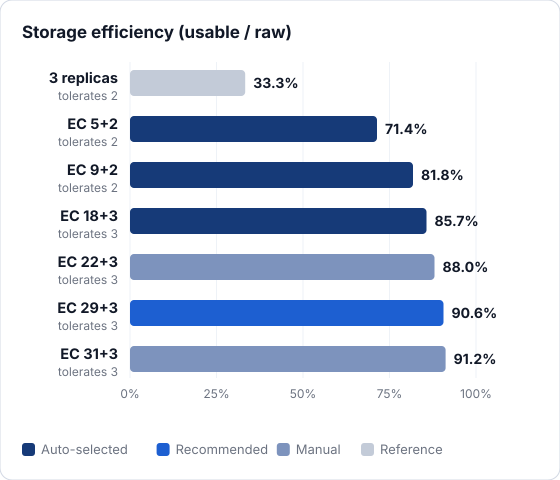
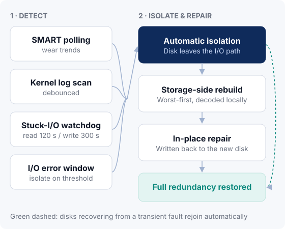
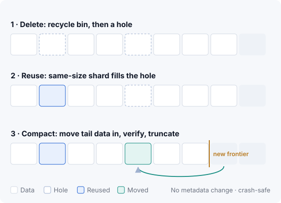
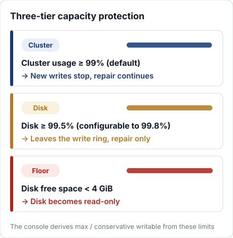
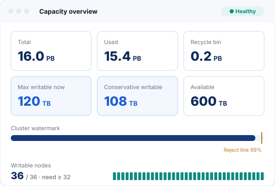

Placement rules and audit
Two shards of the same stripe never land on the same node. The rule is enforced on the write, repair and rebalance paths, and a background audit continuously re-checks every stripe so redundancy is never silently eroded.
Every capability in KDSS serves one goal: keep massive datasets intact for the long term on as few drives as possible — and give operators a clear view and firm control of the system.
Reed-Solomon erasure coding provides the redundancy, placement rules make sure that redundancy is real, and layered health monitoring with storage-side rebuild brings the cluster back to full protection on its own.
Each 256 MB block is encoded into one stripe, and its data and parity shards are spread across different nodes. KDSS picks a conservative profile automatically based on node count; larger clusters can opt into higher-density profiles.

| Profile | Selection | Efficiency | Tolerates | Min. nodes |
|---|---|---|---|---|
| EC 5+2 | Auto | 71.4% | 2 | 8 |
| EC 9+2 | Auto | 81.8% | 2 | 12 |
| EC 18+3 | Auto | 85.7% | 3 | 22 |
| EC 22+3 | Manual | 88.0% | 3 | 26 |
| EC 29+3 | Auto | 90.6% | 3 | 33 |
Additional manual profiles: 19+3, 21+3 and 31+3 (91.2% efficiency). 31+2 carries only two parity shards and lower fault tolerance — use with care.
Two shards of the same stripe never land on the same node. The rule is enforced on the write, repair and rebalance paths, and a background audit continuously re-checks every stripe so redundancy is never silently eroded.
Each read verifies the stripe ID and shard index, so a misrouted request can never return another stripe's data as its own.
Shards are re-read and CRC-checked on a schedule to catch silent corruption early. Scrubbing is rate-limited (20 MB/s per node by default) and its cycle is configurable.
Disks rarely fail all at once — they slow down, throw errors and stall first. KDSS watches every disk from four angles, because the earlier a problem is caught, the less it costs.

Repair runs on the storage nodes themselves: they fetch surviving shards, decode locally and write straight to disk, cutting relay traffic. Stripes with the most missing shards are repaired first; hundreds of thousands of stripes can be queued within minutes and are claimed by multiple Masters in parallel.
After a disk is replaced, the data that lived on it is written back to the same positions on the new disk, keeping the layout exactly as it was.
Deletes go to a recycle bin first, so mistakes can be undone. Garbage collection runs in two phases with a configurable retention window, and a read-only reconciliation tool accounts for orphaned shards.
On-demand rebalancing picks source nodes that deviate from the mean beyond a threshold and moves shards to the emptiest eligible target, with double duplicate checks and versioned updates. Disks within a node can be balanced as well.
Each storage node treats every HDD as an append-only log. Removing the file-system layer shortens the write path, cuts head seeks and makes recovery after a crash far simpler.
All writes are sequential appends aligned to 4 KB. Fewer seeks mean steadier throughput, longer drive life and lower failure rates.
Primary and backup superblocks are each CRC-protected. Every disk records its node ID, disk ID and UUID, so moved slots and renamed devices are corrected at startup — and a wrong disk is refused.
The local index runs on BadgerDB. Every read is verified with CRC32, including streaming reads, so corrupted data is never returned as good data.
After a clean shutdown a node starts in seconds. After a power loss, the engine scans forward from the write frontier to complete its index; if compaction was interrupted, it can rebuild the index for the whole disk. All disks open in parallel.
Durability is selectable in three modes, with the safest as the default.
| fsync mode | Behavior | Typical use |
|---|---|---|
immediate Default | Every write is flushed to disk | General purpose, safest |
batch | Group commit — several writes flushed together | Write-heavy workloads that benefit from fewer flushes |
deferred | Flushes are deferred | Hardware with power-loss protection, such as RAID cards with a BBU |
Deletes are soft: data goes to the recycle bin and is released as a hole only after a configurable freeze period. A new shard of exactly the same size can then be written straight into that hole — an exact match that leaves no fragments.

Running out of space is one of the most common storage incidents. KDSS tightens in three steps — stop new writes while keeping repair alive, then take a full disk out of the write ring, and finally go read-only at the hard limit. Repair always has somewhere to write.

One cluster serves both POSIX file access and an S3-compatible API. In production, about 99% of reads and writes go through the FUSE client.
Mount the cluster as a local directory; existing applications read and write without changes.
df -h reports the cluster's real capacityWorks with standard tools and SDKs such as the AWS CLI, s3cmd, boto3 and the AWS SDK for Go.
| Scope | Operations |
|---|---|
| Bucket | ListBuckets · CreateBucket · DeleteBucket · HeadBucket · ListObjects |
| Object | PutObject · GetObject (incl. Range) · HeadObject · DeleteObject · CopyObject |
| Multipart | CreateMultipartUpload · UploadPart · CompleteMultipartUpload · AbortMultipartUpload · ListParts · ListMultipartUploads |
Operations not listed here — such as versioning, lifecycle and object lock — are not currently supported. See Docs · S3 API for details.
# Point the CLI at the KDSS S3 gateway # 让 AWS CLI 指向 KDSS S3 网关（端口 9000） export EP=http://s3.example.internal:9000 aws --endpoint-url $EP s3 mb s3://archive aws --endpoint-url $EP s3 cp ./dataset.tar s3://archive/2026/ aws --endpoint-url $EP s3 ls s3://archive/2026/
The web console, built-in alerting and Prometheus metrics cover day-to-day operations, while replicated Masters and rolling upgrades keep maintenance invisible to applications.
Built on Vue 3 and Element Plus, the console covers cluster, node and disk views, buckets and access keys, a file browser, alert rules and channels, audit logs and user management.
The capacity panel goes beyond free space. It combines the reject line, per-node headroom and erasure-coding placement rules to show max writable and conservative writable capacity in real time — how much you can actually still write.

P0 / P1 / P2 severities with debouncing and reminder intervals, delivered via Lark and email, with full alert history.
All metrics live in the kdss_* namespace, and /metrics supports Bearer-token authentication. Each release ships 62 alert-rule templates ready for your existing monitoring stack.
A typical deployment runs five Masters with leader election backed by a MongoDB replica set and majority writes. Failover is automatic, and client writes are redirected to the new leader.
Upgrades proceed one node at a time. Each node enters maintenance mode, waits for in-flight writes to drain, is replaced and verified, and only then returns to service.
It stops receiving new write allocations.
Writes already under way finish first.
Swap the binary, then check node and disk health.
Writes resume; the next node begins.
KDSS is usually deployed on a private network. On top of that, the console, the metrics endpoint and inter-component traffic each have their own authentication and protection.
Three built-in roles — admin, storage_admin and readonly — so each team gets only the scope its job requires.
JWT sessions, bcrypt-hashed passwords, login rate limiting and CAPTCHA against brute force, plus CSRF protection.
/metrics supports Bearer-token authentication, so only authorized scrapers can read cluster metrics.
Mutual TLS can be enabled for gRPC traffic between components, or left off to simplify private-network deployments.
Licenses are validated online, and a failed check raises a cluster alert instead of failing silently.
S3 access keys are created and managed centrally in the console, and audit logs record administrative actions for later review.
Tell us about your data volume, access patterns and data-center constraints, and we will recommend node counts, an erasure-coding profile and a hardware configuration.